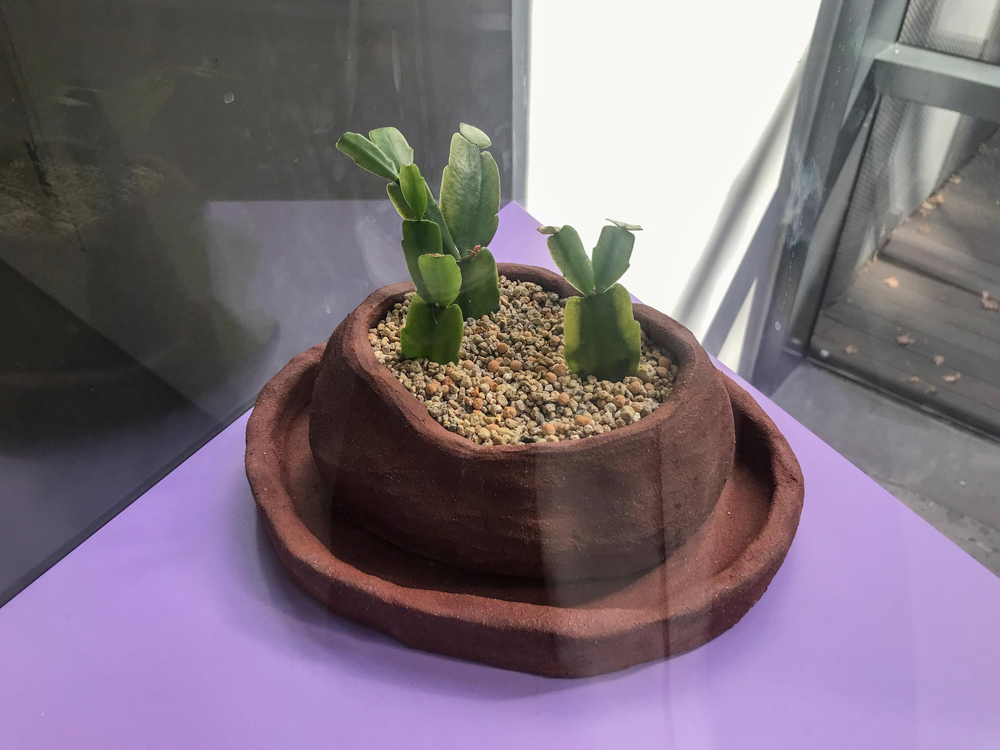
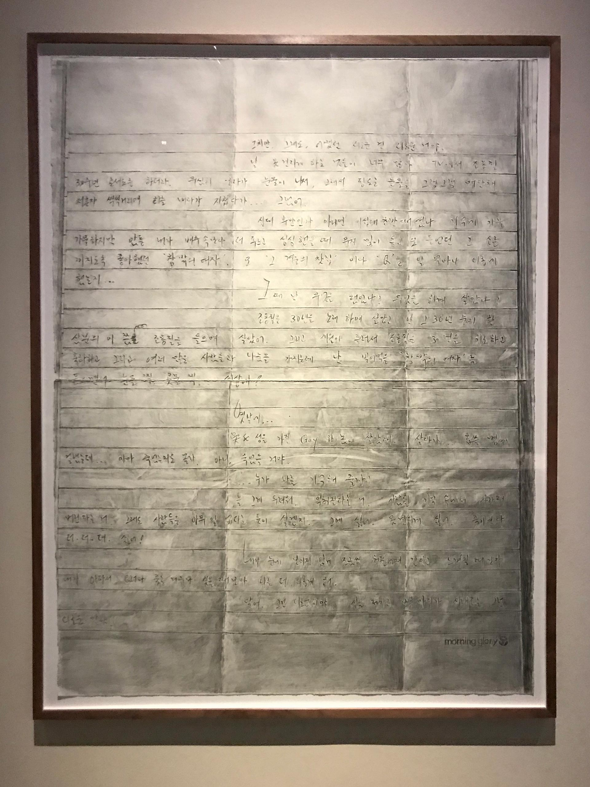
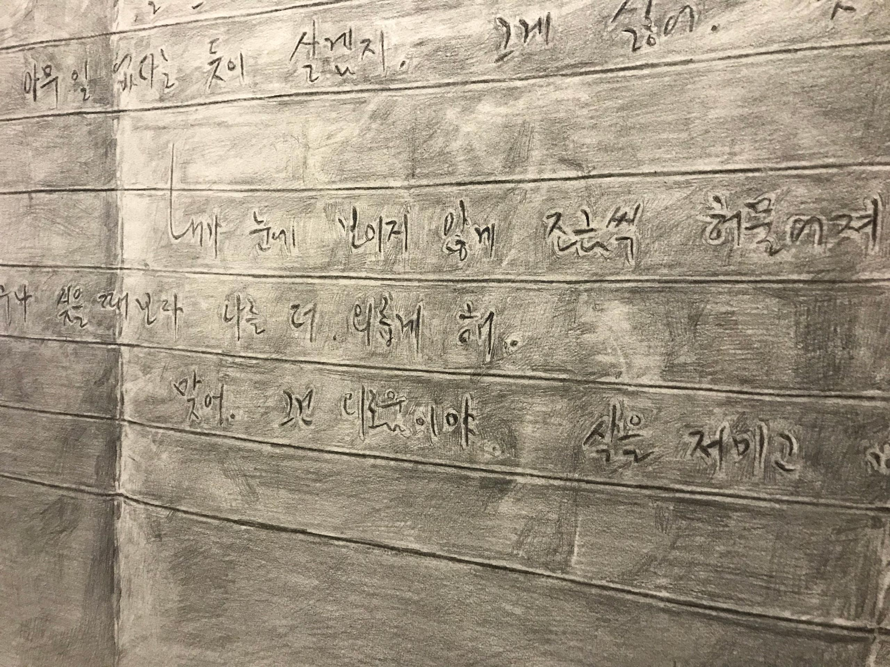
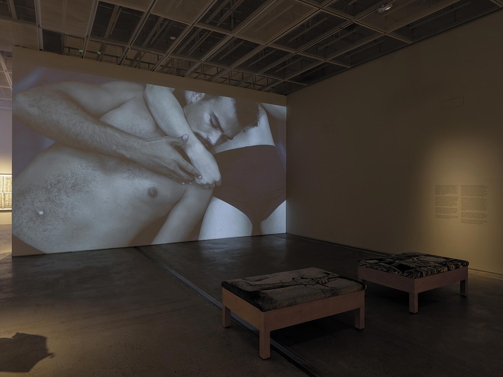
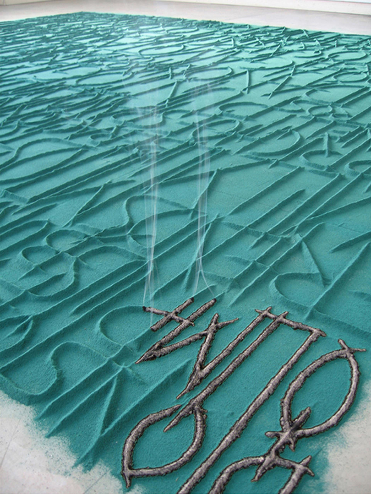
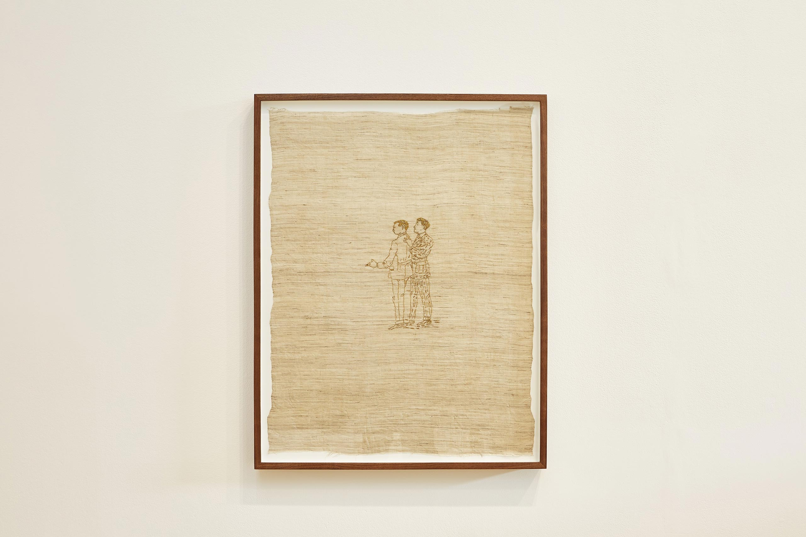
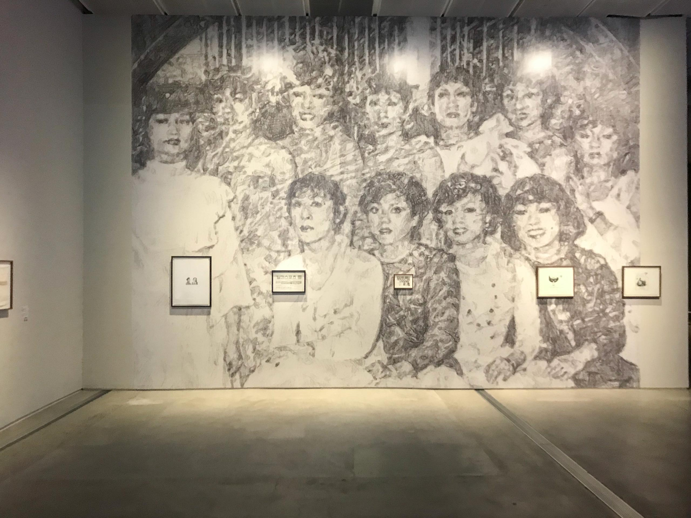

전시 보러 갈래? - 정은영과 함께 1
<
5. 역사의 밤이름을 부를 때 보이는 단서
재훈: 아까 지민이 언급했던 ‘클렁 씨’처럼, 김성환이 a랑 b를 연결하는 논리가 정반합이 아니잖아요. 비슷한 예시로 Room 1에서 커튼을 걷고 들어가면 나오는 Room 1.2에 드로잉 콜라주 작품 〈Poor Kōlea counts na pō mahina〉를 언급하고 싶어요.

사진: 재훈
이 드로잉 작품에 그려진 대상은 ‘검은가슴물떼새’라는 새Bird인데요. ‘검은가슴물떼새’를 하와이어로 ‘Kōlea’, 한국 발음으로는 ‘코레아’라고 부른데요. 한국을 뜻하는 영단어 ‘Korea’와 발음이 아주 유사하죠. 그 아래에는 작가 특유의 자막체로 다음 내용이 적혀있어요.
1. 퀴어 자손으로서의 선인장 <흙 속의 아카이브>, 그리고 망자를 기억할 때
재훈: 네! 다들 전시 어떻게 보셨나요?
재훈: 음... 저 먼저 할까요? 저는 이 전시 되게 여러 번 봤는데요. 지금은 이 전시에 대한 마음이 건조하지만, 두세 번째 봤을 때만 해도 마음이 무척 뜨거웠어요. 전시 제목이 ‘누가 우리를...
정은영: 돌보는 이들을 보살피게 될까’
재훈: 그 제목에 한동안 꽂혀 있으면서 ‘커뮤니티’에 관해 많이 생각했어요. 한 명의 작가가 성장하고 활동을 이어가기 위해서 다양한 역할의 사람이 필요하잖아요. 그 작가의 작업을 봐주는 관객이 필요하고, 그 작업을 어떻게 봤는지 기록해 주는 글쓴이/지면이 필요하고, 그 작업이 다른 무대에서 선보여질 기회를 줄 기획자도 필요하죠. 그런데 한국 현대 미술계의 파이가 작다 보니까, 작가를 희망하는 사람이 계속 배출되는 반면 그 이외에 다른 역할을 맡고자 하는 사람은 적다고 느꼈어요. 아무래도 활동에 대한 유·무형적 보상이 불확실하니까요.
그러다가 ‘이 리뷰 프로젝트를 운영하는 나는 어떤 보상을 받고 있을까, 스스로 만족하고 있나?’ 하는 고민이 다시 되돌아 왔어요. 그렇게 커뮤니티 안에서의 상호적 돌봄을 막연히 열망하는 감정으로 이 전시를 방문했었는데요. 여러 번 방문하다 보니 감상이 그때그때 달라졌어요.

*한국어로 된 작품 캡션을 찾을 수 없는 경우, 과거 전시에서 쓰였던 영어 캡션을 편집자가 번역하여 실었다. <흙 속의 아카이브>의 캡션은 《Made in L.A. 2023: Acts of Living》에서 사용된 버전을 사용했다.
오늘은 전시장 입구 앞에서 선인장 작품 <흙 속의 아카이브>를 설명하고 계시던 도슨트 선생님에게 눈이 갔어요. ‘미국 최초의 게이 정치인 하비 밀크(1930~1978)가 살해당한 뒤, 그의 애인이 하비가 키우던 선인장의 일부를 친구들에게 유산으로 떼어줬고, 그 선인장이 이강승 작가를 거쳐 이번 전시의 큐레이터에게까지 전달되어 만들어진 작품이 <흙 속의 아카이브>이다.’라는 내용인데요. 언뜻 봤을 때 이성 결혼을 한 ‘아줌마'로 패싱되는 10명 이상의 관객이 퀴어 유산에 관한 설명을 듣고 고개를 끄덕거리는 풍경이, 선인장의 일부를 전해 받는 몸짓으로 느껴졌어요.
그 외에도 전시 제목인 ‘누가 우리를 돌보는 이들을 보살피게 될까’, 영상 작업 <라자로 (정다은, 네이슨 머큐리 킴과의 협업)>, <손의 심장 (조슈아 세라핀, 네이슨 머큐리 킴과 협업)> 그리고 여러 퀴어에 대한 정보가 올려 놓아진 <무제 (Table)> 등 전시를 이루는 요소들을 들여다보면 각기 다른 퀴어들의 유산이 핵심이잖아요. 그 유산을 남긴 사람들과 그들의 이야기에 접속할 수 있는 통로, 작가 본인의 표현대로라면 여러 ‘문'들이 즐비해 있던 전시로 기억합니다... (웃음)
정은영: 근데 왜 이렇게 웃으면서 어쩔 줄 몰라 하세요?
재훈: 혼자 길게 말하면 민망해서요... 그건 그렇고 정은영 작가님의 <여성국극 프로젝트>[1] 역시 연구 조사 기반의 작업이잖아요.
초반에는 여성국극 커뮤니티 자체를 조망하는 것이 목표였지만 중반 이후부터는 여성국극의 마지막 세대인 남은진 배우와 게이 코러스를 만나게 한다든가, 여성국극을 단초 삼아 다른 식의 퀴어 계보를 그린다거나, 점점 다양한 만남을 주선하시는 모습이 이강승 작가의 역할과 닮아 있다고 생각했어요. 그래서 여러 후보 중 굳이 이 전시를 골랐네요.
상운: 그다음으로는 제가 할까요?
정은영: 원래 말하는 순서도 계획돼 있는 건가요? (웃음)
상운: 아니요. 편하게 하는 거죠. (웃음) 저는 이번이 두 번째 관람인데, 지난번보다 오늘 감상이 훨씬 좋았어요. 왜냐하면 첫 번째 관람에서는 네 작가의 전시를 모두 꼼꼼히 봐야 한다는 부담이 있었는데, 이번에는 이 전시만 천천히, 가벼운 마음으로 둘러보자는 생각에 오히려 놓쳤던 디테일들이 보이더라고요. 그 디테일이 전시가 제안하는 돌봄의 방식에 가닿아서 울렸던 것 같아요.
저는 어떤 부정이나 혼란 없이 비교적 빠르게 스스로를 정체화한 편이라 이른 나이부터 다양한 사람을 만나왔는데요. 그중 어떤 형이 저에게 그런 말을 했었어요. “우리는 무조건 연예인 아니면 무당이 된다.” 당시에는 무슨 뚱딴지같은 소리인지 의아했는데, 최근에 그 말이 ‘유산을 남기지 못할 수 있다는 위기감’에서 비롯된 것이 아닐까 싶더라고요. 생물학적으로 자손을 낳아 번식할 수 없는 지향성을 타고났기 때문에 ‘내가 죽고 나면 나는 어떤 방식으로 기억되는가, 무엇을 남길 수 있는가.’와 같은 질문들을 하게 되었죠.
그래서 그 형의 말이, 내가 죽음 너머의 영적인 무언가와 소통하게 된다거나, 대중 앞에 세워져 불특정 다수에게 기억되는 길을 걸어가게 된다는 뜻이었을까, 곱씹었습니다. 그런 지점에서 주목했던 작품이, 오준수 작가님이 썼던 편지를 키운 드로잉 <무제 (오준수의 편지)>와 영상 옆에 비치되어 있던 양피지 위에 얼굴이 지워진 사람들이었어요.
 
편지에 적힌 ‘누가 나를 기억해 줄까. 내가 죽어도 다른 사람들은 계속 살아가는 게 죽기보다 싫다.’ 이런 내용과 얼굴이 지워진 이미지를 같이 보니까 되게 먹먹해지고, 이전에는 꼼꼼히 이해하려고 봤던 전시가 그때부터는 조금 더 감각적으로 다가오더라고요. 그러다가 전시장에서 나왔을 때 선인장 <흙 속의 아카이브>를 보고 정리가 됐어요. 그러니까 ‘이렇게 선인장을 옮겨와서 키우는 방식으로라도 남을 수 있고, 기억될 수 있고, 유산이 될 수 있다. 이런 방식으로라도 돌봐줄게.’와 같은 메시지를 받은 듯해 몽글몽글해진 기분이었습니다.
재훈: 저도 오준수의 편지를 연필로 크게 그린 드로잉이 아주 좋았어요. 제가 퀴어 정동에서 제일 와닿는 게 외로움인데 그게 딱 집약된 작품이어서 ‘이것까지 포함해서 참 좋다.’ 그렇게 생각했었어.
상운: 동시에 드로잉 앞에 있는 오준수에 관한 아카이브 작품인 <무제 (Table)>에 ‘조금만 더 가까이 갈 수 있게 해줬으면 좋았을 텐데’라는 아쉬움도 있었어요. 거리 두기용 설치 때문에 너무 안 보이더라고요.
재훈: 미술관이니까 어쩔 수 없죠. 그래도 인터뷰 영상을 작가별로 세련되게 만들어서 잘 볼 수 있는 의자나 헤드폰 환경을 조성해 놓는 것도 미술관이라서 가능한 것이고, 올해의 작가상 제도 때문에 가능한 거잖아요.
지영: 미술관 입장에서 말을 해주네요.
재훈: 단점과 장점, pros and cons.
정은영: 그다음 차례는 누구예요?
지영: 저는 오늘 전시를 처음 봤고, 이 작가에 관한 기본적인 지식 같은 게 거의 없는 상태로 봤어요. 전시를 볼 때 아무것도 모르는 채로 가서 보는 거를 제일 좋아해서요. 저는 영상 작품 <라자로 (정다은, 네이슨 머큐리 킴과의 협업)>을 먼저 보았는데, 영상이 대기업에서 만든 뮤직비디오 같다는 인상을 처음에 받았습니다. 엄청나게 긴 크레딧을 보니 프로덕션이 되어 있는 영상이라고 인지되어 멀찍이 떨어져 봤어요. 근데 영상에 자막과 구체적인 사람의 얼굴이 나왔을 때 갑자기 연결되는 느낌을 받으면서 감정적으로 공격을 받았다고 생각했어요.

© KANG SEUNG LEE
재훈: ‘연결되는 느낌’이란 어떤 의미에요?
지영: 영상의 한 부분에서 사람이 퍼포먼스를 하는데 저 동작은 내가 알 것 같은 느낌이 들 때 감정적으로 연동됨을 느꼈어요. ‘저 말 무슨 말인지 안다. 너무 내가 알고 있는 느낌이다.’라는 생각에 작품 안으로 확 들어갔다가 나오는 거죠. 영상 하단에 나오는 자막도 그랬고요.
재훈: 혹시 어떤 자막인지 기억하나요?
지영: 누가 쓴 시를 인용한 거라고 했는데 느낌만 기억나네요. 엄청 가까운 사람을 잃어버린 느낌. 그 느낌이 너무 직감적으로 나를 공포에 떨게 해서 공격받았다는 느낌이 들었던 것 같아요. 그런 건 웬만하면 안 느끼고 싶으니까. 그리고 그 엄청 매끈하게 마감된 영상에서 그 감각을 느낄 줄 몰랐고요.
동시에 기록되는 것에 관해서도 생각했어요. 작가가 작품에 인용하는 사람들은 대부분 죽은 사람이잖아요. 죽은 사람을 기억하고 아카이빙하는 일이 얼마나 중요한지 알지만, 아카이빙이란 그만큼 복잡한 문제라는 생각이 들어요. 가까운 사람들을 잃는 슬픔도 슬픔인데, 저는 죽은 이후에 다른 예술가들에 의해 계속해서 기록 당하는 일을 겪고 싶지 않다는 생각을 자주 하거든요. 아주 가까운 사람들이면 몰라도.
재훈: 늙어서 자연사로 죽어도 기록은 되잖아요. 그렇게 작고한 작가의 회고전에서 그 사람의 생활 감정이 적나라하게 보여지는 경우도 종종 있고요. 지영이 원하지 않는 ‘아카이빙 당함'은 어떤 형태예요?
지영: 퀴어를 비롯한 어떤 사람들은 엄청 자주 죽는 것 같아요. 그 사인이 자살이든, 질병이든 혹은 사회적인 문제로 인한 타살이 되었든. 이런 죽음과 가까운 곳에 있을 수밖에 없는 사람들이 죽을 때는, 그렇지 않은 사람과 조금 다르게 그 기억이 남는 것 같아요. 그 사람의 다른 부분은 사라지고 그의 정체성이나 안쓰럽고 불쌍한 사연이 확대되어 남는 거죠. 그 사람이 퀴어라는 점, 20대 여성이라는 점, 노동자라는 점 등등 안쓰럽게 여길 만한 조건은 많죠. 죽은 사람들 중에서 그런 조건을 갖춘 사람은 ‘사실 이러이러한 아픈 과거를 가지고 있었다.’는 식으로, 기록되기 수월하게 다른 사람 입장에서 캐릭터화되는 거죠. 뭐 이강승 작가도 좋은 아카이빙 하시지만 한편으론 캐릭터를 가져와서 모으는 것 같은 인상도 있었어요.
재훈: 실비아 플라스나 프란체스카 우드만이 그렇게 전형적으로 캐릭터화된, 미국의 젊은 여자 예술가들이죠. 저도, 알고 보니 어떤 사람이 젊은 나이에 죽은 여성이라는 사실을 알게 될 때 그 사람들을 캐릭터화해서 보곤 해요. 케이팝 아이돌 멤버가 죽는 경우도 다르지만 비슷한 면이 있고요.
상운: 누군가에 의해 나의 죽음에 새로운 맥락이 덧붙여진 채로 다른 사람들 앞에 놓이게 되는 것에 대한 막연한 두려움인 걸까요?
지영: 이렇게 아카이빙해서 모아놓을 때는 어쨌든 그 사람의 모든 면을 가지고 오기 힘들잖아요. 근데 모든 면을 꼭 다 가지고 올 필요는 없죠. 그렇지만서도... 그 수집 행위가 작가 본인의 즐거움이나 삶의 의미만을 위해 중요한 일일 수도 있고, 앞으로 살아갈 다음 세대의 사람들에게 좋은 일일 수도 있죠. 그런데 어떤 아카이브는 딱히 앞으로 살아갈 세대의 사람들에게도 좋지 않을 수 있다.
정은영: 혹시 과잉되어서 재현된다는 느낌도 받았나요?
지영: 음, 연필로 그린 드로잉들은 좀 덜한 것 같아요. 어떤 사람에 관한 기억이나 편지 등을 가져와서 그리는 일은 그것들을 몸으로써 다시 소화하고 이해하는 것이니까요. 그런데 영상은 멋진 몸과 상징품 그리고 찬란한 조명과 같은 요소들 때문에 과잉 재현된 부분이 있다고 생각했던 것 같아요. 그래서 앞서 언급했던 감각이 갑자기 훅 들어와서 공격당했을 때 약간 속았다고 느끼기도 했어요.
2. 타자와 커뮤니티를 작업에서 다룰 때의 난점
정은영: 의미 있게 들리는데요. 퀴어 커뮤니티 안에서 일어나는 일들처럼 쓰여질 수도 없었던 역사는, 그 기록을 계속해서 남기는 작업이 너무 중요하잖아요. 그런데 그 아카이브를 통해 작업을 하고자 할 때에는 매번 선택의 기로에 서게 되는 것 같아요. ‘내가 이 사람의 과거를 너무나 평면적으로 봉합해 버리는 건 아닐까?’ 싶은 두려움도 있는 동시에, 이것이 너무 말해지지 않았기 때문에 자꾸 반복해서 말해야 된다는 책임감과 소명 의식도 생기는 거죠. 그 사이에서 계속 윤리적인 질문을 하게 되고요.
그럼에도 불구하고 작가라는 직업이 무언가를 내놔야 하는 직종이다 보니 방법론이 결국, 지영 작가님의 말처럼 갈 수밖에 없다는 생각도 들어요. 주로 연구 조사 기반으로 아카이브를 다루는 작가들에게 닥친 지금의 문제의식인 것 같기도 하고요. 꼭 퀴어 커뮤니티에 국한하지 않더라도 이번 전시에 같이 노미네이트 된 갈라 포라스 킴 역시 이강승과 유사한 기로에 있을 거라고 느끼고, 저 역시 마찬가지거든요. 제가 남은진 씨[2]와 함께 작업할 때 그 위기를 많이 느꼈어요.
자기가 설 수 있는 무대가 아예 없고, 자기 이야기가 반복적으로 가시화되는 기회를 정말 필요로 하니까 제가 작업 제안을 할 때면 매번 하겠다고 응했거든요. 하지만 그렇게 무대에 서서 제가 작성한 대사를 읊을 때마다 스스로를 공격하는 느낌을 계속 받는 거죠. 자기 삶의 비루함을 끊임없이 파헤치니까요.
사실 ‘예술 작품 생산'이라는 맥락이 없다면 자기 자신을 공격하는 일을 그렇게까지 할 필요는 없는데, 작가로서 우리는 그 일을 다시 거듭하게끔 하는거예요. 강승 씨는 인터뷰 영상에서 “내가 문이다...” 뭐 이런 식으로 표현하던데, 이런 말을 하는 건 너무나... (일동 웃음)... 그렇게 까지는 좀 아닌 것 같지만요..
그런 복합적인 고민이 전시에 출품된 모든 작업마다 조금씩 다르게 녹아있는 것처럼 보였어요. 저희는 어쨌든 모두 작업을 하는 사람이니까 그런 지점들을 더 민감하게 느꼈을 것 같고요. 비문화예술인 관객이었다면 도슨트의 설명에 고개를 끄덕이고 그만일 수 있는데, 고개를 끄덕인 뒤 작업실로 돌아와 나 역시 작업을 해야 할 때는 이야기가 달라지죠. 그렇기 때문에 이런 민감한 감상들이 의미 있는 것이고요.
지영: 저도 사진 촬영을 하는 사람이다 보니 다른 사람을 찍는 일에 관해 자연스레 생각하게 돼요. 어쨌든 저 사람의 이미지 등을 데려오는 방식으로 그 사람의 이야기를 쓰는 거니까. 다른 동시대 작가들 역시 이와 같은 문제를 신경 쓰고 있지 않나 싶어요.
최근에 본 전시들은 개인전, 단체전을 불문하고 매우 여러 명의 작업자를 포함하더라고요. 여기에는 1년이라는 주요 지원 사업들의 주기나, 빠른 속도로 계속해서 발표해야 하는 젊은 작가들의 상황의 영향이 있겠죠. 한 사람의 물리적 역량만으로는 채워지지 않는 것들이 있으니까. 그 빈틈을 다른 작업자를 데려옴으로써 해결하고, 여러 사람이 만든 것들을 모아서 전시장에 걸어놓는 건데, 이제는 이런 방식이 좀 질리더라고요..
하여튼 이 전시에도 여러 작업자가 참여했죠. 이강승 작가와 사적으로 긴밀한 관계였던 사람들뿐 아니라 먼 곳에 있는 이러저러한 사람들. 근데 영상 작업에 참여한 무용수들은 가만히 서 있어도, 이강승 작가와 함께하지 않아도 이미 너무나 멋진 사람들이잖아요. 여기저기를 잇고 계승하고 그러면 당연히 좋지 싶으면서도 제게는 너무 화려한 느낌도 있었어요.
상운: 같은 맥락에서 평소에 품어왔던 질문이 있어요. 저는 제 작업을 할 때나 다른 작가들의 작업을 볼 때, 내 외부에 있는 것을 작업으로 다루는 일이 두렵거든요. 내가 그것들을 망쳐버리거나 이기적으로 사용해 버리는 게 아닐까? 하는 두려움. 그래서 그런 작업을 하고 싶다는 생각이 들면 ‘왜 내가 해야 하지?’라고 스스로에게 질문하게 돼요. 어떻게 하면 작업으로써 무언가를 돌보는 일을 ‘내가 해야겠다’라고 생각하게 되는 걸까요?
정은영: 커뮤니티에 대한 헌신이 스스로에게 의미 있는 사람과 그렇지 않은 사람이 있기도 하고요. 오래 살다 보면... 자연스럽게 그렇게 되기도 하죠. (웃음) 나이가 들수록 삶이 더 스펙터클해지기보다는 안정성을 갖게 되는 경우가 많잖아요. 그러다 보면 바깥이 조금 더 잘 보이기도 할 테고요. 그럴 때 내가 지금까지 올 수 있었던 힘이 무엇이었는지를 되묻다 보면, ‘결국 나는 내가 헌신했던 커뮤니티와 같은 보폭으로, 어깨를 걸고 왔을 것’이라는 생각이 분명하게 들고는 해요. 강승 씨가 인터뷰에서 말한 ‘결코 자기 혼자 이룬 건 아니다.’ 역시 비슷한 의미라고 느끼고요.
그리고 대부분의 작가가 자기 내부의 것을 뽑아내면서 작업을 하지만, 저는 그 이야기가 언젠가는 고갈된다고 보거든요. 하지만 타인의 이야기와 연대해서 접근했을 때에는 세계가 더욱더 확장되는 느낌이 있어요. 그 감각을 알고 있는 강승 씨가 분명히 좋은 선택을 했을 거라고 믿고요. 하지만 이런 방법론들이 점점 유사해지고 그에 동원되는 개념들이 계속 관념화되다 보니까 구체적인 관계나 개별적 삶은 사라지는 느낌도 확실히 있죠. 우리가 막 ‘커뮤니티! 커뮤니티!’ 이러면서도 사실은 물리적 커뮤니티에 구속되어 살기 싫잖아요. 그러면서도 관념으로써의 커뮤니티를 굉장히 중요하게 여기고요. 그런 문제들이 남아 있죠.
앞서 재훈 님이 이야기했던, 충실히 삶을 살고 자연사한 사람들의 회고전을 볼 때 느껴지는 불편함을 저도 느끼거든요? 제가 작가이기 때문에 계속 이런 딜레마가 생겨요. 나는 여성국극 1세대 선생님들이 그냥 사라질까봐 끊임없이 가서 말을 시키고 자꾸 무언가를 남기라고 종용하지만, 만약에 제가 지금 죽는다면 사후에 제 작품을 싹 없애달라고 하고 싶거든요. 이 생각은 그냥 어느 날 갑자기 떠오른 게 아니라 수많은 작가의 회고전이나 죽은 작가들의 아카이브를 보면서 하게 된 것이에요.
지영: 작년에 열렸던 비비안 마이어 사진전이 대박이었어요. 비비안 마이어처럼 사진 찍을 수 있는 포토 부스가 정말 많았거든요. 거기 가서도 ‘진짜 죽지 말아야지’라고 생각했어요. (웃음)
정은영: 그런 선상에서 봤을 때, 죽음이 빠르게 잊히곤 하는 소수자들의 이야기를 거듭 반복하는 일도 강렬한 편집증적 아카이브욕망으로부터 비롯됐다는 생각이 들어요. “빨리 이걸 남겨야 한다. 이들이 쉽게 잊혀지면 안 된다.”
3. 커뮤니티적 감각, 라떼는 이랬다.
상운: 그렇게 서로가 서로에게 기대고, 기댈 수 있도록 내어줄 만큼 연대 의식을 느낀다는 점에서 어딘가 모르는 부러움도 생겨요.
정은영: 그럴 수 있어요. 강승 씨나 저와 같은 70년대생 사람들은 인터넷이 없던 시기에 20대를 보냈는데요. 저희보다 조금 더 선배 격인 오인환 작가의 작업을 보면, 서울에서 남성 동성애자들이 갈 수 있는 클럽의 이름을 나열하는 방법론이 실제로 등장해요. 그때는 클럽과 같이 물리적이고 물질적인 공간이 너무 중요했거든요. 그것마저 없을 때의 그 외로움은 이루 말할 수가 없었기 때문에. 그때는 정말 “... 나 같은 사람은 아예 없나?”와 같은 시무룩함이 주종을 이루는 고민이었거든요.

<남자가 남자를 만나는 곳>은 전시회가 열리는 도시에 산재하는 게이바/클럽의 이름들을 수집하여 전시장 바닥에 향 가루로 적은 것이다. 전시회의 시작과 함께 점화된 작품은 전시 기간 동안 천천히 타들어 가고 재로 변한 게이바/클럽의 이름들은 하나씩 두드러진다.
ⓒINHWAN OH
지금은 트위터에다 혼잣말만 해도 누군가가 RT를 해주는 시대잖아요. 웹Web이 대중적으로 보급된 이후로도 저희에게 웹은 그 물리적 공간의 대용물일 뿐이었어요. 그 웹을 신체화하거나 우리가 그 안에 들어가 있다는 생각을 잘 못했었거든요. 아마 그랬기 때문에 커뮤니티에 관한 말도 상대적으로 더 빨리 해버릴 수 있는 것 같아요. 커뮤니티에 관해 더 말해야 된다는 의무감이나, 그게 더 옳은 것 혹은 더 나은 것이라고 느끼는 감각 역시 그때의 환경과 연관 깊지 않을까요?
재훈: 이해가 잘 안되는 부분이 있는데요. 인터넷이 지금처럼 보급되지 않았던 1990년대 ~ 2000년대 초반에 20대를 보낸 사람들은 외로움이나 슬픔과 같은 감정을 지금보다 더 극심하게 느꼈다는 점과, 커뮤니티에 관해 말하는 일이 올바른 것이라는 가치 판단이 어떻게 연결되는 건가요?
정은영: 기본적으로 우리 세대는 ‘함께 해야만 된다’라는 확신이 지금 젊은 세대에 비해 더 강한 세대였어요. 그게 더 옳다고 믿었고요. 우리가 20대에 생겨난 웹/온라인 공간은 물리적인 공간에서의 만남을 위한 도구적 수단이었어요. 온라인 공간에서 열심히 활동하는 것보다 그 활동을 통해 오프를 만나는 게 중요했고요. 예를 들면 밤새도록 티지넷TGnet[3]에서 채팅을 하고 다음 날 아침에 만나는 거예요. (웃음)
그런 구조가 너무 확실하고 당연해지니까 그와 같은 방식으로 구성되는 커뮤니티로부터 우리가 함께 있다는 감각과 무언가를 찾을 수 있다는 감각을 느낄 수 있었고, 실제로 만나는 게 나의 외로움을 일소하는 데 무척 중요한 역할을 했던 것 같아요. 지금의 젊은 세대는 트위터 같은 온라인 공간에서 자기에 관해 전혀 밝히지 않으면서도 엄청나게 많은 말을 나누잖아요. 그러다 보면 실제로 한 번도 본 적 없는 사람들이 와서 댓글도 달고 RT도 해주고요. 그런 방식의 감각은 아니었던 거죠.
저희에게는 ID 너머에 실체인 사람이 분명히 있었어요. 이런 점에서 부럽다는 느낌을 받을 수도 있겠지만 결과적으로는 대동소이한 것 같아요. 세대에 따라 커뮤니티 감각이 다르다기보다는, 각자가 속해있는 환경에 따라 커뮤니티 문화가 조성된 것이라 생각해요.
상운 님이 부러워하는 커뮤니티란 것 역시 커뮤니티라는 관념이 아닐까 싶어요. 앞서 이야기했던, 하비의 선인장을 나눠 갖는 일이 아주 시적이고 관념적으로 정말 좋은 유산을 퍼뜨리는 것 같지만 사실 그 식물 자체만 놓고 보면 아무것도 아니잖아요. 저도 집에서 식물을 엄청 키우는데 준다고 해도 아무도 안 가져가거든요? 더구나 게발 선인장은... 단지 미술이 물질을 앞으로 내놓는 장르이기 때문에 그 맥락 안에서 의미를 갖는 사물인 거죠. 그저 관념인 거예요.
하여튼 저 역시 이강승 작가와 굉장히 유사한 선상에서 작업하는 사람으로서 형식적인 출구가 필요하다고 느끼는데 아직 답을 구하지 못했어요. 이와 또 반대편에 있는, ‘퀴어인 나’가 중요해지는 최근의 분위기도 저는 좀 이상하다고 생각하고요.
상운: 사실 부러움을 언급한 이유는, 제가 거의 온라인 위주의 환경에만 있다가 아는 선배를 따라 커뮤니티가 모이는 특정한 장소들에 가봤어요. 궁금했거든요. 어떤 일이 일어나고, 어떤 이야기가 오가고, 어떻게 서로 함께하는가. 그러나 소속감 같은 것은 못 느꼈던 것 같고, 저는 오히려 더 외로웠어요.
지영: 웬만한 사람들은 외롭지 않나요? 거기 가면?
정은영: 관계 지향이 좀 다른 거 아닌가요?
상운: 그럴 수도 있어요. 그래도 여러 정체성 중에 퀴어가 있는 사람과 관계를 맺는다는 점에서는 되게 좋았는데, 퀴어라는 정체성만이 공통점인 사람들 사이에서는 더 외로움이 느껴졌다고 해야 할까요. 잘 모르겠네요.
재훈: 뭘 기대했던 거예요? 문을 열고 그 공간 안에 들어가면 수많은 사람이 두 팔 벌려 환호하면서 “상운! 어서 와~~ (함박웃음)” 이런 걸 바랐던 건가요?
상운: (웃음) 그러니까 공감대라던가 이런 게 형성이라도 될 줄 알았는데, 전혀 없었어요. 글쎄요, 다 떠나서 그 공간과 제가 안 맞는 사람이었을 수도 있어요.
정은영: 실제로 지금 전 세계적으로 굉장히 많은 퀴어 바들이 사라지고 있잖아요. 그 원인으로는 웹의 영향이 크다는 것이 공통된 의견인데 어때요? 요즘 MZ들은 잘 안 가나요?
상운: 저는 그렇게 한 번 경험해 보고 끝났어요. 한국에서는 그랬던 것 같아요.
지영: 저는 그래도 꽤 가는 것 같아요. 아까 영상의 음악이 너무 좋았는데 키라라가 만들었더라고요. 작년 한남동 마더 오프라인에서 열린 트랜스패런트 파티에서도 키라라가 공연을 했었는데 좋았어요. 아까 노래 들으면서 클럽 가고 싶다는 생각을 했습니다.
상운: 저녁에 만나서 같이 클럽을 갈 걸 그랬네요.
지영: 우리 같이 어디로도 들어가지 못하지 않을까요? 정체성이 너무 달라서 (웃음)
재훈: 네, 많은 생각이 드네요.
정은영: 좀 복잡한 문제인 것 같아요. 소위 퀴어 커뮤니티를 얘기할 때.
재훈: 커뮤니티라는 단어를 떠올릴 때 연상되는 혼자가 아니라는 감각을 저는 페미니즘/퀴어 독서 모임을 통해 경험한 바 있어요. 그때는 독서 모임도 페미니즘도 처음이어서 들어가자마자 쭈뼛쭈뼛 인사하고 가만히 있었는데 호스트분이 오셔서 “와인 드실래요?” 물어보시는 거예요. 그게 그 당시에는 무척 감동이었어요. 그때 처음 만났는데 ‘저 사람은 좋은 사람이다.’ 그런 생각 하곤 했죠. (웃음) 이야기 듣는 것도 재밌어서 그 모임에 나가는 일이 무척 좋았던 기억으로 남아 있어요. 근데 지속이 안 되더라고요.
지영: 지속이 잘 안되죠, 좋은 모임들은.
정은영: 모임의 구성원들이 원하는 관계의 종류가 각자 다를 것이기 때문에 동일한 목적을 계속해서 구현하지 않으면 모임이 지속되기 힘들죠. 저의 라떼시절을 회고해 보면, 게이 친구들과 게이가 아닌 친구들은 관계를 지향하는 방식이 너무 달랐어요. 이를테면 게이 친구들은 독서 모임이나 인권 모임 같은 데는 잘 안 오지만 클럽에 가자고 하면 엄청 잘 가더라고요. 같이 박근혜 퇴진을 외치다가도 새벽이 되면 사라져서 이태원에 갔다가 다시 오더라고요. 어느 순간 이런 게 그들의 생태라는 생각이 들더라고요.
그런데 레즈비언들은 만나면 너무 자기 커플끼리 사라지니까 또 뭐가 없는 듯한 이상한 외로움이 있고, 트랜스젠더들은 퀴어 커뮤니티에서조차 거부당할 때가 많으니까 그때 느끼게 되는 서러움이 또 있겠죠. 모두가 커뮤니티라는 것을 어떻게 상정하고 어떻게 지향할 것인가에 따라서 느껴지는 만족도나 상실감이 다 있을 것이라 생각해요. 그럼에도 불구하고 그렇게 눈에 보이지 않는 커뮤니티적 감각이라도 지니고 있어야, ‘우리가 너무나 시니컬해지는 것을 막을 수 있지 않을까?’ 그런 생각들을 하긴 하죠.
4. 커뮤니티적 감각을 안과 밖에서 나눌 때 (1)
정은영: 한편으로는 이런 궁금증도 계속 갖게 돼요. 커뮤니티적 감각을 작업을 통해 드러내는 일이 필요하긴 하지만, 앞으로도 계속 지금과 같은 방식으로 써야 하나? 제가 요즘 작업을 선뜻 못하고 있는 이유도 마찬가지예요. 제가 <여성국극 프로젝트>를 하며 1세대 선생님들과 서로 알고 지내는 동안 그분들이 정말 많이 돌아가셨어요. 처음에 한 30명을 만났다면 지금은 3명 정도를 뵙고 있는 상황이에요. 그런 상황이 되니 지금 남은 사람들의 이야기라도 서둘러 잡아놓아야 하는 건 아닐까 엄청 조급해했어요. 그러다가 인간의 삶이라는 게 나의 조급함과 속도만으로 해결될 만큼 단순하지 않다는 사실을 깨닫게 되기도 하고요. 그때부터 제가 새로이 만나야 되는 사람들을 찾아보고 있어요.
이건 조금 다른 맥락의 이야기인데요. 저는 작업에서 스태프가 필요할 때 적어도 퀴어이거나 최소한 엘라이인 사람을 주로 고용해요. 그들과 이야기를 나누면서 작업을 해 나갈 때 훨씬 편안한 느낌을 받고 무엇을 더 설명하지 않아도 돼서 심플하거든요. 예를 들어 키라라에게 제 작업에 필요한 음악을 의뢰할 때 저는 많은 설명을 하지 않아요. 한 다섯 문장 정도 이야기하면 바로 다음 날 샘플이 오거든요? 그렇게 더 깊이 들어가지 않아도 “우리는 서로를 알고 있다.”라는 느낌이 바로 커뮤니티적 감각일 수도 있다고 생각해요. 그 감각에 저와 제 작업을 걸고 있다 보니, 아까 지영 작가님이 제기했던 문제의식들을 고스란히 느끼게 되죠.
그리고 근래에는 퀴어 담론이 많이 앞서 나가기도 했잖아요. 서구에서는 전 지구적인 환경 문제처럼 ‘망가지고 부정적인 것들과 함께 가야 된다’라는 관점 아래서, 퀴어들의 관계 맺기 방식을 통해 그 문제들에 더 개입해야 한다고 보는 입장들이 많은 것 같아요.
이를테면 퀴어들이 성관계를 맺는 방식이 절대 자손을 만드는 방식이 아니잖아요. ‘생식과 재생산을 하지 않는 관계맺기와 돌봄’이라는 관점에서 현재의 환경과 생태를 퀴어링 할 수 있어요. 사실 헤테로 부부들도 불임이 많아지는 추세인데, 그렇다면 재생산 의료에 관해서도 퀴어관점을 만들 수 있죠. 관련된 주제를 다루는 글인 헤더 데이비스의 「퀴어 자손」을 보면, 플라스틱 때문에 지구가 다 망하는 것 같지만, 플라스틱을 먹이 삼아서 출현하는 새로운 생태가 등장해요. 이런 사례들을 곧 퀴어 유산인 동시에 퀴어 자손에 관한 새로운 존재 방식의 미래라 이해해 볼 수 있는 거죠.
그런 관점으로 바라본다면 인류세 자본주의의 폐허 속에서도 퀴어한 가능성을 만날 수 있어요. 퀴어관점은 점점 더 확장적으로 미래를 상상할 수 있게 해 주죠. 하지만, 강승 씨의 작업은 퀴어당사자의 입장에서 좀 나이브할 정도로 긍정적 미래를 제안하고, 또, 박물관에 굉장히 잘 안착할 수 있는 온건한 작업으로 보이기도 하죠.
재훈: 네, 형식적으로 특별히 추한 부분이 있는 건 아니니까요.
정은영: 관객이 작업에 접속하는 경로는 여러 가지겠지만, 어떤 때는 우리가 이미 알고 있는 경험이나 지식 때문에 작업이 나에게 접속해 들어오잖아요. 강승 씨가 제안하는 퀴어나 돌봄의 문제에는 그것에 기본적으로 전제된 종족지적이고 윤리적인 커뮤니티 감각이 중요하다고 생각하기도 해요. 또, 저는 지영 님이 기획하셨던 《모텔전: 눈 뜨고 꾸는 꿈》에 방문해서도 그렇게 느꼈거든요.
그 감각을 알기 때문에 모텔이란 공간이 지금 잠시 유의미한 것이지, 사실 그날 밤에 ‘그냥 모텔 갈까?’ 하고 왔다가 전시를 마주하는 어떤 사람들에게는 ‘여기서 파티 하나?’ 이렇게 느껴졌을 수도 있잖아요.
지영: 맞아요.
정은영: 조지프 오스먼슨의 『바이러스, 퀴어, 보살핌』 (곰출판, 2023)이라는 책을 보면 퀴어 커뮤니티나 퀴어 재현물들을 사유하는 흥미로운 방식이 나와요. 코로나 시국에 그랬듯이, 우리는 흔히 바이러스를 나쁜 가해자로 받아들이잖아요. 하지만 바이러스란 내가 언제든지 가해자가 될 수도 있고 피해자가 될 수도 있다는 것, 이곳저곳으로 전파되면서 ‘(마치 소셜미디어 마케팅처럼) 바이럴’된다는 성격을 갖고 있다는 거예요. 바이러스를 삭제하는 것, 즉 바이러스를 퍼트리는 이들 - 에이즈, 혹은 코로나 시기의 감염인들 - 을 삭제하면 모두가 안전해질 것이라는 생각이 얼마나 납작하고 게으른 사고인지를 알아야 한다는 거예요. 우리는 커뮤니티 내/외부에서 영향을 받고 영향을 끼치면서, 돌봄을 받고 또 돌보기도 하는 복잡한 관계맺기를 하고 있어요. 마치 바이러스처럼 많은 이들과 난잡하게 연루되어 있겠죠. 공동체적 감각이란 또한 그런 것이기도 한 것 같아요.
재훈: 앞서 이야기했던 도슨트 장면이 다시 떠오르네요. 아주머니들이 하비의 선인장에 관해 설명을 듣고 웃으실 때 잠깐 레즈비언들처럼 보였었거든요. (웃음) 그리고 오준수의 일기 드로잉 옆에 남자 두 명이서 껴안고 있는 작품 <무제 (Cover)>가 있었는데 어떤 남자 관객이 그걸 사진 찍고 계셨어요. 그 모습을 보고서 ‘저분은 게이일 수도 있지 않을까?’라는 생각과 ‘저걸 사진 찍음으로써 퀴어 수행을 하고 있다’는 생각을 했어요.

© KANG SEUNG LEE
또 미술관에 올 때마다 두세 명씩 보이는 아기 관객들도 유의미하게 봤어요. 지금 저 아이들이 전시장에서 봤던 걸 시간이 지나서 그대로 기억하지는 않을지라도 한 번 본 것과 한 번도 보지 못한 것은 다르니까요.
정은영: 그런 게 미술관의 역할인 것 같아요.
상운: 안 그래도 오늘 아기 관객이 전시장에 아장아장 들어와서 어머님께 “저거 뭐야?” 하고 크게 물어보더라고요. 그래서 속으로 ‘그러게, 뭘까. 뭐라고 말씀하실까? 아기한테 어떻게 얘기를 해주실까?’ 궁금해서 귀를 쫑긋 세우고 있었는데, 별다른 말씀을 안 하시더라고요. 그럼에도 그 이미지와 코드를 공유할 수 있는 작업이 전시장에 놓여 있고, 그걸 아기가 자연스럽게 볼 수 있다는 상황이 좋다고 생각했어요.
지영: 작년에 여행을 가서 레즈비언 사진들이 아카이브 된 전시를 봤는데요. 미술관 건물 하나가 다 레즈비언 아카이브로 채워져 있었어요. 1층에는 옛날 아카이브가 전시돼 있고 2층에는 현재 활동하고 있는 퀴어 사진 작가들의 사진이 전시돼 있었는데요. 제일 먼저 몸으로 느꼈던 감각은, 작업이 어떻다기 보단, 지금 말하고 있는 것처럼 사람들이 그냥 별거 아닌 것처럼 보고 있다는 사실이었어요.
정은영: 국공립 미술관이나 상업 화랑 그리고 대안 공간이 가지고 있는 맥락이 각자 다르잖아요. 작가가 전시를 하게 될 때 그 공간의 맥락은 이용될 수밖에 없다고 생각해요. 저도 국공립 기관에서 전시를 할 때는 굳이 퀴어라는 단어를 어딘가에 꼭 쓰게끔 한다든가 하는 전략을 사용하거든요. 소수자들의 이야기가 국공립 기관에서 선보여질 때 그냥 단어 하나라도 더 들어가는 것이 (세 분이 앞서 이야기했던 것처럼) 그 과정 안에서 중요한 역할을 할 수 있다고 생각해서예요.
지영: 그럴 것 같아요.
재훈: 전시 공간에 처음 들어가면 보이는 커다란 흑백 사진이 그런 의도가 선명히 보이는 선택이라고 생각했어요.

상운: 전시 초입에 있었던 영수증 설치 작업도 떠오르네요. 버튼을 누르면 퀴어의 미래에 관한 문장들이 하나씩 출력되어 나오는 작업이었잖아요. 국립현대미술관에 떡하니 놓여 있는 퀴어 미술과, 아기들이 그 전시를 자연스럽게 보는 상황 사이에서 약간 이질감을 느끼면서도 ‘그 미래에는 이런 이질감이 없으려나?’라는 생각도 했던 것 같아요.
지영: 저는 전시장에서 ‘친구 사이’처럼 내가 알고 있는 사건이나 지명이 눈에 들어올 때 ‘여기서 이걸 보다니?’라고 생각했어요. 연대나 커뮤니티 그 사이에서 일어나는 인용에 있어서는, 좀 더 별것 아닌 것들을 가지고 오는 걸 봤을 때 좋더라고요.
그 연결된 감각을 저는 친구들의 블로그 일기를 보면서도 느껴요. 어떤 사람에게 있어 삶에 가장 큰 비중을 차지하는 중요한 가치들 말고, 좀 더 그 사이사이에 있는 것들을 가져올 때 혹은 엄청 구체적으로 가져올 때 좋다고 느끼는 것 같아요. 맞죠?
재훈: 맞아요. 나는 인스타그램이 싫어요.
전시 보러 갈래? - 정은영과 함께 (2)
상운, 재훈, 지영
2024.03.26